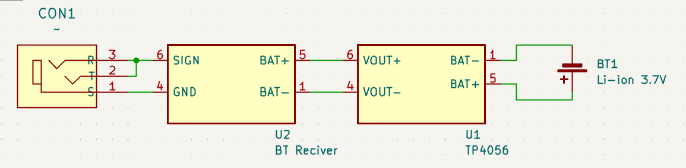
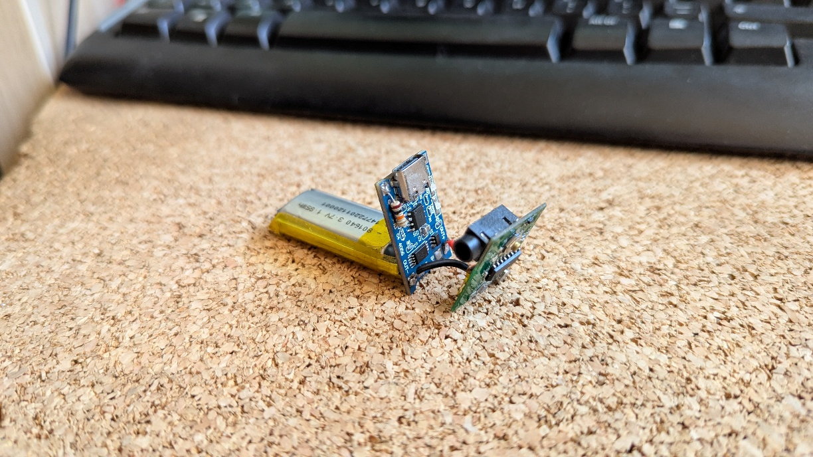
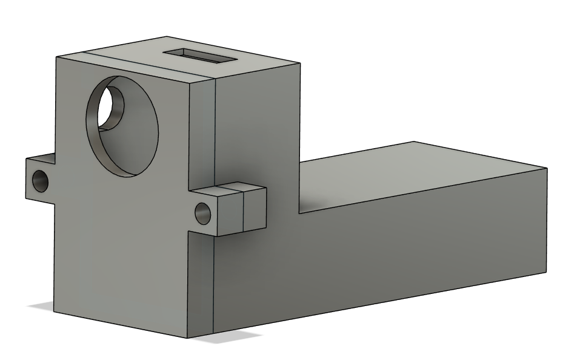
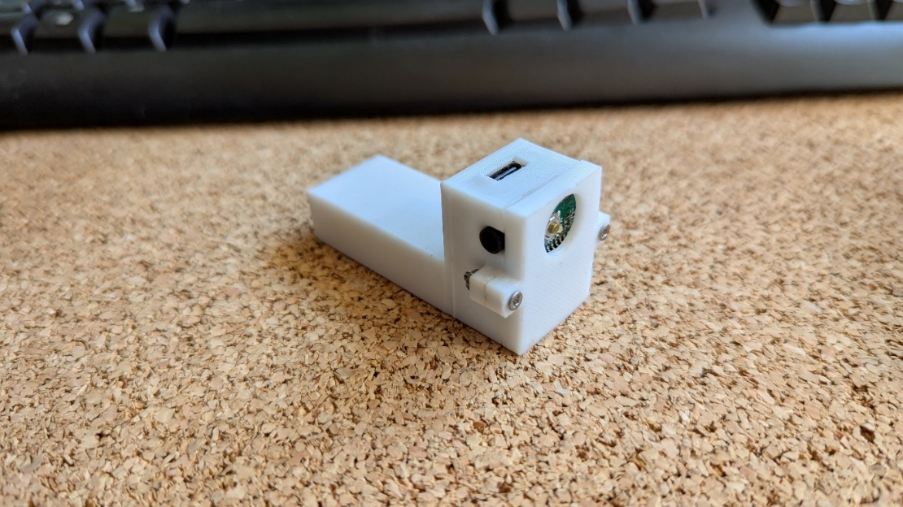

BT-adapterBT adapter
EesmärkGoal
Anda vanale autole, millel on vaid kassetimängija, Bluetooth-toega muusikamängija (kasseti kujul).
Give an old car that only has a cassette player a Bluetooth music player shaped like a cassette.
KirjeldusDescription
Seade ühendab mitu komponenti, et pakkuda juhtmevaba muusika kuulamise kogemust. Süsteemile lisati suurem aku ja akuhaldussüsteem (BMS), mis võimaldab pikemat tööaega ja kiiremat laadimist. Korpus on disainitud ja 3D-prinditud auto sisustuse järgi.
The device combines several components to deliver a wireless listening experience. A larger battery and a battery management system (BMS) were added for longer runtime and faster charging. The enclosure was designed and 3D-printed to match the car's interior.
PildidImages



